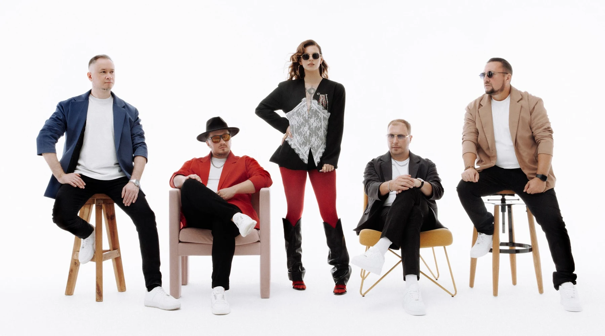

01 / НА СЦЕНЕ
МАЙБАХ
на сцене
О ГРУППЕ
МАЙБАХ
МАЙБАХ — флагманский проект Виктора Велина
Желанный гость на мероприятиях любого масштаба.
5 музыкантов с репертуаром на любой вкус: от караоке-хитов и свежих чартов до рока и зарубежных песен.
175 выступлений
с начала 2026 года
По состоянию на 4 ноября 2026 года
03 / В КАДРЕ
Фотографии группы
КОНТАКТЫ
Пригласить МАЙБАХ
Виктор Велин
Организация выступлений МАЙБАХА
Для первого обращения укажите дату, город и формат события. Остальные детали согласуем отдельно